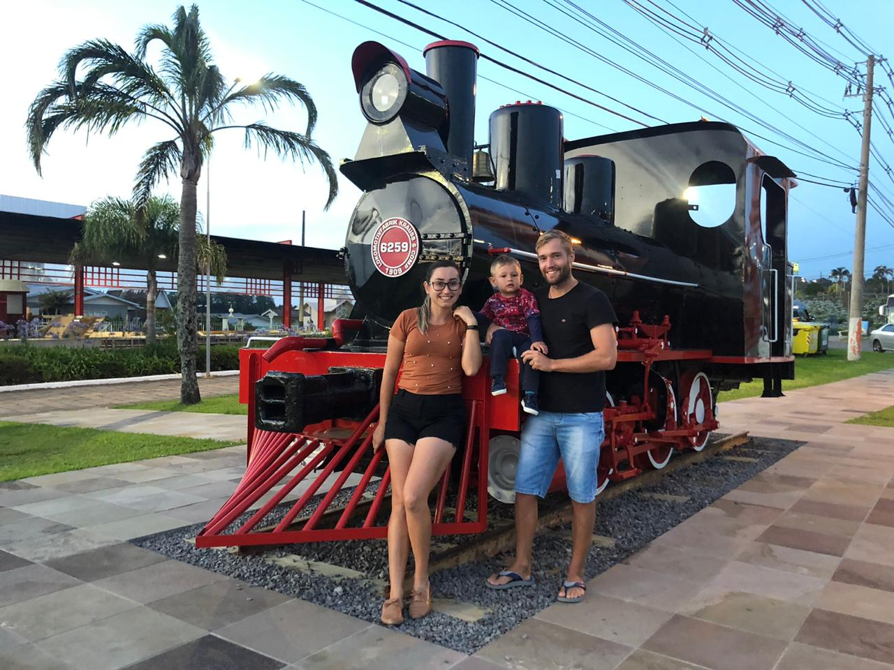
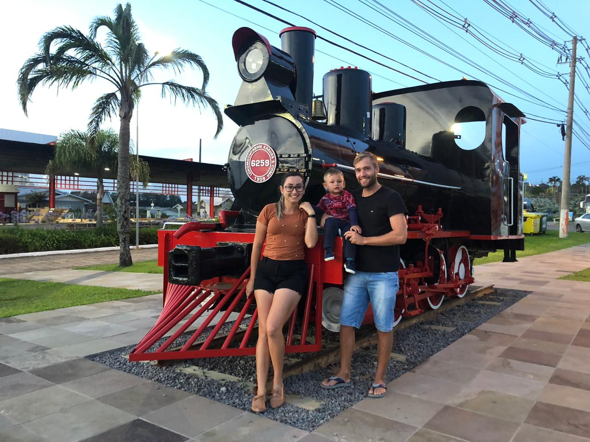

Sobre Mim

 

Olá! Bem vindo ao meu Portifólio Pessoal.
Meu nome é Tarlan Marcos Dalla Vecchia, tenho 34 anos, amo minha família e gosto muito do meu trabalho. Sou entusiata da tecnologia, gosto de aprender coisas novas e estar ativo, visando sempre o crescimento profissional e pessoal. Isso motivou-me na busca em ampliar meus conhecimentos na área de TI.